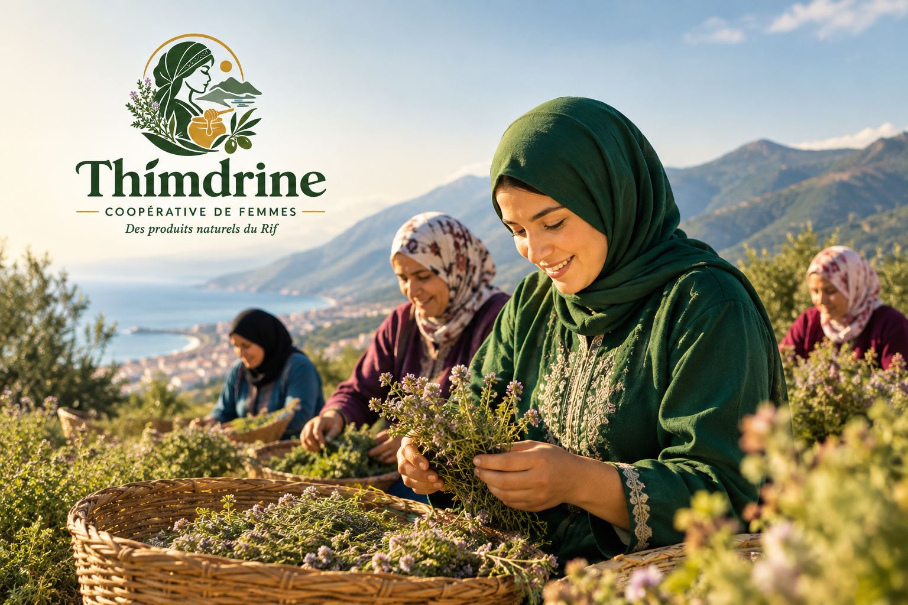

Notre histoire
À propos de Thimdrine
Une coopérative de femmes qui valorise les produits naturels et le savoir-faire du Rif.
Qui sommes-nous ?
Créée en 2015 dans la région de Nador, la coopérative Thimdrine réunit 25 femmes qui travaillent ensemble pour valoriser les produits naturels de leur région.
Chaque produit est récolté, transformé et conditionné avec soin, dans le respect des méthodes traditionnelles.
Notre savoir-faire
Nos ruches sont installées dans les collines de thym sauvage du Rif. Nos oliviers poussent sur les terrasses familiales et nos figues de barbarie sont cueillies à la main chaque été.
Notre objectif est de proposer des produits authentiques tout en permettant aux femmes de la coopérative de développer leur activité et de préserver le savoir-faire local.

Découvrez notre travail
Retrouvez nos produits naturels et authentiques directement sur notre page produits.
Voir nos produits